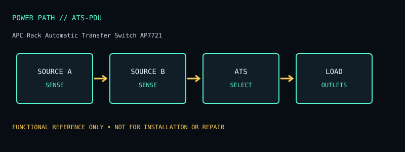

[ AUTOMATIC TRANSFER SWITCHES // MODEL RECORD ]
APC Rack Automatic Transfer Switch AP7721
Rack ATS for redundant AC sources, IEC output model for compatible 208/230 V equipment. The specifications below are for this named model and region only; verify the complete product label and matching manual before deployment or service.

ARCHIVAL IDENTIFICATION: Preserve the complete SKU, suffix, region, date code, revision, installed battery part (if present), firmware and physical condition. Similar model names do not establish hardware equivalence.
Specifications, conditions & service
| Catalog subcategory | Automatic transfer switches |
|---|---|
| Topology / power path | Automatic transfer switch: selects between two live sources for single-cord equipment; no inverter or battery storage. |
| Ratings / output configuration | Manufacturer listing identifies 10 A at 230 V / 12 A at 208 V for the AP7721 configuration; check input supply and nameplate. Two IEC C14 source inputs and twelve IEC C13 outputs on the listed AP7721 configuration; confirm the installed inlet panel and cord before wiring. |
| Battery / replaceability | No battery. |
| Runtime / limits and conditions | No battery runtime. Transfer continuity relies on transfer time and the attached load’s power-supply hold-up; no time guarantee with incompatible source phases. |
| Interfaces / monitoring | Front status/display and source-selection controls; this AP7721 SKU is not equivalent to network-managed ATS products. |
| Safety / installation caveats | Use two compatible, independently available sources with correct voltage/frequency and grounding. ATS is not a UPS or surge suppressor. Respect output-current and branch circuit limits; miswiring can damage equipment. |
| Model variants / revision checks | AP7721 is an IEC 230 V regional SKU. Do not confuse with AP7722B or NEMA/120 V transfer switches; the manufacturer product catalog may group old revisions—follow nameplate manual. |
Field service / archive notes
- Record labels and connector layout before installation; document load, input conditions, measured behavior and test date separately from manufacturer-rated values.
- Never open energized mains equipment. Battery devices can retain dangerous voltage or high fault current; follow the manufacturer’s replacement and recycling procedure.
- Inspect enclosure, cord, plugs, grounding, indicators, alarms and battery condition. Quarantine damaged, swollen, leaking or heat-affected equipment.
- Network-management appliances should be isolated, updated where supported and configured with non-default credentials; do not expose legacy management interfaces directly to the public internet.
Manufacturer references
- Manufacturer product listing — APC Rack Automatic Transfer Switch AP7721Model identity and product-family specification reference. Confirm exact regional SKU against the chassis label.
- Manufacturer manual / support documentationConsult the version matching the exact SKU. Runtime references are load- and condition-dependent estimates where supplied, never a guarantee for a particular aged unit.